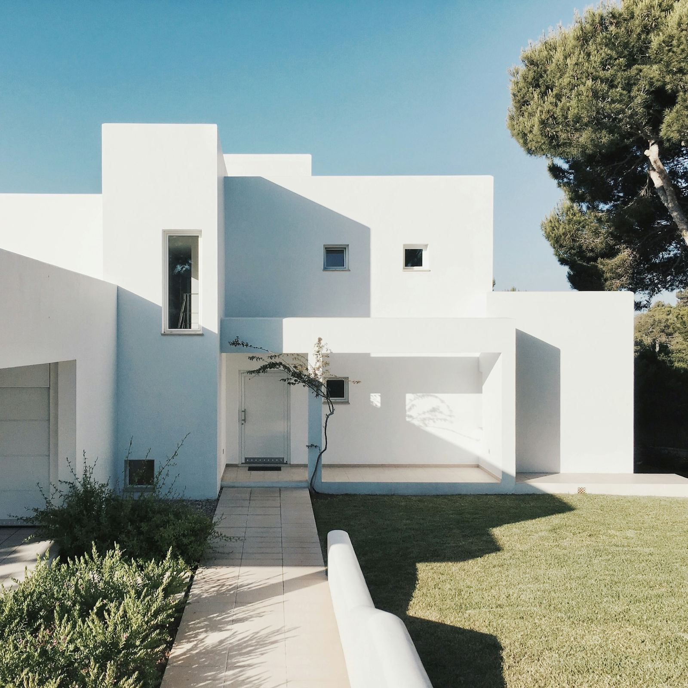

People
Portraits
People as they are, in the light they like. An hour or an afternoon, outdoors when we can, and nobody asked to say cheese.
Book a session ↗Photography for the moments that deserve to stay.
Explore portfolio ↗
03 / Light & spaceThree kinds of work, one way of looking.
People as they are, in the light they like. An hour or an afternoon, outdoors when we can, and nobody asked to say cheese.
Book a session ↗Houses, studios, shops and coastlines: the rooms people love and the things they keep in them, photographed slowly.
See the places ↗Editorial stories, brand work and the occasional wedding that feels like a long lunch. Tell me the moment and I will tell you how.
Start a conversation ↗